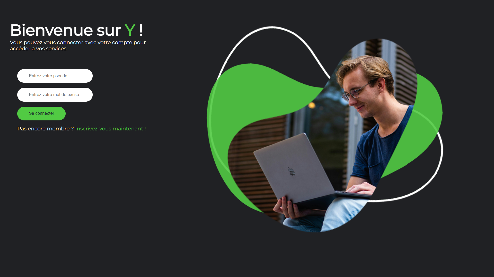
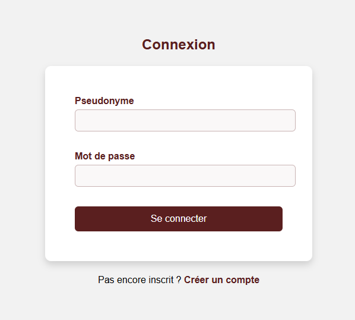
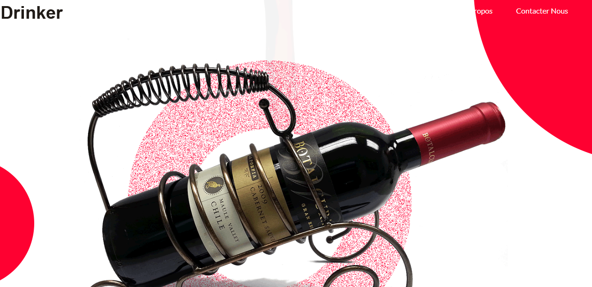

Réseau Sociaux "Y"
Développement de la partie base de données avec SQL
Étudiant en BTS SIO option SLAM, je suis spécialisé dans la création et la mise en place de sites web modernes, performants et centrés sur l'expérience utilisateur. J'ai choisi ce BTS car je ne savais pas vers quoi je pourrais me plaire
Lycée Dhuoda
Lycée CCI Gard
Développeur front-end : Mise en valeur de certaines fonctionnalités avec du HTML, CSS et JS.
Développeur full-stack.

Développement de la partie base de données avec SQL
Application mobile en lien avec le site culturel (AP3)

Page de Connexion en fonction du role attribué

Site sur l'oenologie
 HTML
HTML
 JavaScript
JavaScript
 PHP
PHP
 SQL
SQL
 C#
C#

À partir de fin 2024, l’intelligence artificielle prend une place importante dans le domaine des jeux vidéo, notamment pour améliorer les performances graphiques.
Des technologies comme le DLSS de NVIDIA, le FSR d’AMD ou le XeSS d’Intel utilisent l’upscaling afin d’afficher une image en haute résolution à partir d’un rendu calculé en plus basse qualité.
Cette méthode permet d’obtenir une meilleure fluidité tout en limitant la consommation de ressources matérielles.
NVIDIA continue de développer le DLSS avec l’ajout de technologies de génération d’images basées sur l’intelligence artificielle.
Le système crée des images intermédiaires entre deux images calculées par la carte graphique afin d’augmenter artificiellement le nombre d’images par seconde.
Cette technique améliore fortement la fluidité dans les jeux récents, notamment avec le ray tracing activé.
L’intelligence artificielle est également utilisée pour améliorer le rendu du ray tracing en temps réel.
Des algorithmes de débruitage permettent de réduire le bruit visuel généré par les calculs de lumière complexes.
Cela permet d’obtenir une image plus nette, plus stable et plus réaliste sans perte importante de performances.
Les moteurs de jeu modernes comme Unreal Engine 5 continuent d’évoluer avec des technologies avancées comme Nanite et Lumen.
Nanite permet d’afficher des modèles 3D très détaillés, tandis que Lumen améliore l’éclairage dynamique en temps réel.
Ces technologies sont parfois associées à des outils utilisant l’intelligence artificielle afin d’optimiser les performances et le rendu visuel.
Les consoles récentes commencent à intégrer des technologies similaires à celles utilisées sur PC pour améliorer le rendu graphique.
L’intelligence artificielle permet d’optimiser l’image en temps réel, d’améliorer la fluidité et de maintenir une bonne qualité visuelle sans nécessiter une augmentation importante de la puissance matérielle.
Cette évolution montre que l’IA devient progressivement un élément central dans le développement des jeux vidéo modernes.
Je suis disponible pour échanger à propos d'un stage, d'une alternance ou d'un projet.
Me contacter